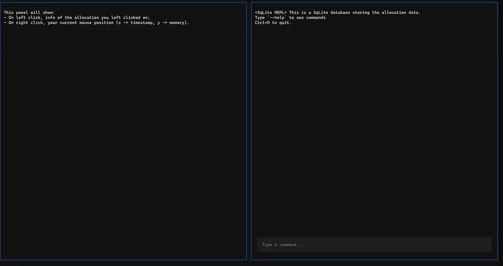
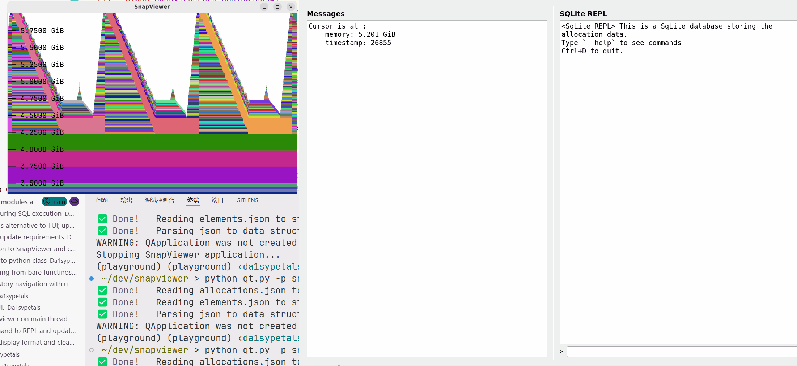
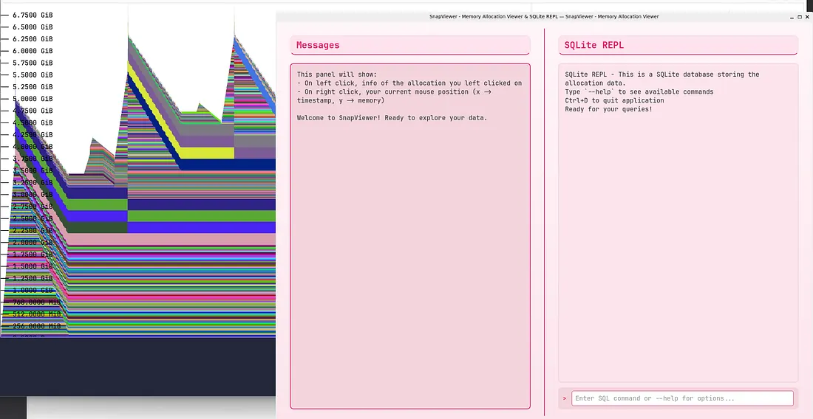

Snapviewer Devlog #2: UI
Intro: Building the UI as a Hybrid Rust & Python Application
Building a UI can often be the trickiest part of a development project, especially when you’re trying to integrate different languages and paradigms.
For SnapViewer, my memory allocation viewer, I needed an integrated UI that could display allocation details on click and feature a REPL for SQL queries against a SQLite database. This post details my journey, the hurdles I faced, and the solutions I found, primarily focusing on a Rust backend and Python UI.
Project page: https://github.com/Da1sypetals/SnapViewer
The Initial Vision: An Integrated UI
My core requirements for the UI were:
- Interactive Display: When an allocation is clicked in the viewer, its size, call stack, and other relevant information should be immediately displayed.
- SQL REPL: A command-line interface to execute SQL queries directly against the underlying database.
- Non-Blocking Operations: Both functionalities needed to operate without blocking each other.
Early Attempts and Roadblocks
Web: Rust to WASM
My first thought was a web interface. Rust’s ability to compile to WASM and the three-d crate’s WebGPU support seemed promising. However, I quickly hit a wall with library versioning issues trying to compile even a simple Rust program to WASM. Rather than get bogged down, I decided to pivot.
TUI: Terminal User Interface
The natural next step was a Terminal User Interface (TUI). This approach avoids the complexities of cross-compilation and platform-specific GUI libraries.
Ratatui: A Promising Rust TUI Framework
I started with Ratatui, a TUI framework for Rust. I got their demos running, but my plan to find an open-source example matching my “left-console, right-REPL” layout failed.
Diving deep into the Ratatui documentation felt as complex as learning a new frontend framework like React, which defeated my goal of getting work done quickly. I abandoned this path.
Textual & AI-Powered Development
Given my goal of getting work done rather than becoming a TUI expert, I started thinking about AI. Rust isn’t particularly “AI-friendly” for code generation, but Python certainly is. This sparked an idea: What if I used AI to generate the TUI code in Python and then integrated my Rust application?
I fed my requirements to several LLMs: Claude, Gemini, Deepseek, ChatGPT, and Grok. Claude’s initial results were impressive, while the others were largely unusable. After a few rounds of refinement with Claude, I had a working TUI demo:

Combining Rust and Python: A Hybrid Approach
Integrating Rust and Python is a standard process, but it has its quirks. I used PyO3 as a dependency to expose my Rust structures and bind Rust functions to Python.
My core Rust logic consists of:
- Viewer: An infinite loop handling render draw calls and an event loop until the application shuts down.
- SQL REPL: Loads snapshot data into SQLite and executes SQL queries.
Each of these operations is designed to be completed in milliseconds.
Designing App Structure
My initial application structure idea was:
- Main Thread: Renders the TUI and accepts REPL inputs, calling SQL REPL Rust functions.
- Spawned Thread: Runs the infinite loop for the Snapshot Viewer.
However, the three-d crate, which uses winit for window management, dictates that the window must run on the main thread. This immediately threw a wrench in my plans.
Attempt 1: Multiprocessing
My first revised design used multiprocessing:
- Start the application and load snapshot data.
- Spawn a new process to run the TUI application.
- Run the Viewer in the parent process.
This setup allowed the child process to run the viewer window without blocking the TUI app. The challenge, however, was Inter-Process Communication (IPC). I needed a way for the viewer to send information (like selected allocation details) back to the TUI.
I experimented with Python’s multiprocessing.Queue. My approach was to define a callback in Rust that put messages into the queue, and then have the parent process check the queue at a fixed interval (e.g., 0.1 seconds) to update the TUI’s logging panel.
I encountered an implementation bug where the parent process wasn’t consuming all messages, causing the viewer and TUI to become out of sync. I then switched to a shared byte array with a lock for IPC. The child process would acquire the lock, write to the buffer, and release it. The parent process would try to acquire the lock at intervals to read the message and update the TUI.
Attempt 2: Threading
The multiprocessing solution had a couple of issues:
- The TUI sometimes froze when typing in the REPL, likely due to lock contention.
- Balancing the log message update interval with the viewer’s framerate was tricky. Too frequent, and the UI lagged; too slow, and the viewer became unresponsive.
I realized I could use multithreading instead! While winit requires the viewer window to run on the main thread, the TUI application does not. This led to a new, more elegant structure:
- Spawn a thread and start the TUI application on that thread.
- Start the viewer on the main thread.
A naive implementation, however, caused the entire TUI to freeze. The culprit? The Global Interpreter Lock (GIL) in Python. The GIL ensures that only one thread can execute Python bytecode at a time.
Time for some PyO3 details. By default, the extension function holds GIL during its execution; but when you don’t need to use Python objects during this call, a call to py::allow_thread can opt out this behavior, releasing the GIL.
In my case, the Rust extension holds GIL in the infinte render loop, preventing the TUI thread from updating the UI. By explicitly releasing the GIL during the viewer’s render loop, the TUI, running in its own sub-thread, was free to update, and the application could run as expected.
An Alternative: GUI with PyQt
As an interesting side experiment, I wondered about a GUI instead of a TUI. I tasked Claude with translating my TUI code into a GUI application using PyQt. Claude did this in minutes, without errors.

After a few minor styling tweaks (also done via chatting with Claude), here is what the app looks like:

(I finally switched to Tkinter for compatibility issues with multithreading across platforms.)
Wrapping Up
This journey highlights the flexibility and power of combining Rust’s performance with Python’s rapid development capabilities, especially when augmented by AI.
Understanding the intricacies of thread management and inter-process communication helped a lot in this journey.
Hope you find this post is fun and informative to read! ❤️❤️❤️